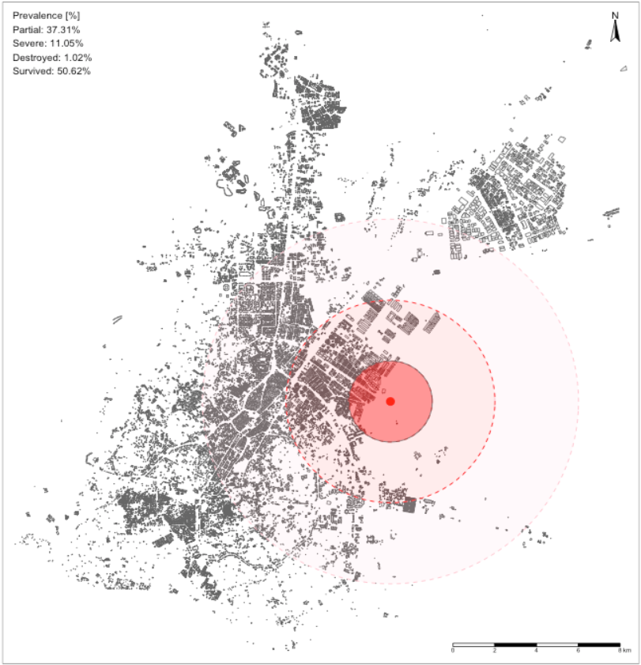

Graphical representation of spatial data
1 Introduction
1.1 Lecture video (Length: 43:13)
1.2 Computer practical video (Length: 01:59:48)
The goal for this week’s session is to introduce you to the various and most common geoprocessing (i.e., spatial operations) and data managing techniques for handling geospatial vector datasets. Geoprocessing is a framework and set of tools for processing geographic and related data - having this under your sleeve will help you to efficiently analyse and represent geospatial data.
1.3 Learning outcomes
Understanding spatial properties, relationships and how they are used within spatial operations are the building blocks to spatial data processing and analysis. This tutorial takes you through a simple approach to measuring greenspace access for schools in London, using geometric operations as the main methods for processing and analysing your data. You will construct a buffer data set around our greenspace and determine whether nearby schools intersect with this buffer. We will first visualise our data as points to see if we can identify areas of high versus low access - and then aggregate the data to the ward level for potential further use within analysis with statistical data, such as census information.
1.4 Getting started
To enable the efficient, repeatable and reproducible functionality of our work, we will use R-Studio’s ability to create and host code as a script. Before we do anything therefore, we will need to create a new R script: File > New File > R Script
Let’s go ahead and save our script now, so we know it’s stored in our system - and in the future, we only need to remind ourselves to complete a quick save (e.g. cmd + s (mac) / ctrl + s (windows)).
1.5 Datasets & setting up the work directory
Before you begin, if you have not done so already, please make sure to download all data by clicking here. Create a sub folder called “Week 2” within your “GEOG0114” folder stored in the desktop of your personal computer. Make sure to extract all data from the downloaded zip folder and store it into “Week 2” folder. Use your newly open R script and set the work directory to Week 2’s folder.
For Windows, the code for setting the work directory will be:
setwd("C:/Users/AccountName/Desktop/GEOG0114/Week 2")For MAC, the code for setting the work directory will be:
setwd("/Users/AccountName/Desktop/GEOG0114/Week 2")1.6 Loading and installing packages
We will need to load the following packages:
sf: Simple Featurestmap: Thematic Mapping
The above packages sf and tmap should have been installed previously in the last session. Therefore, we do not have to install them again, we only need to activate them using the library() function. There will be some new packages we need to install:
tidyverse: this library is a efficient coding style in RStudio. It allows the use of a pipe function (%>%), among other things, within our work and enables more efficient programming.units: this library provide functions that support the conversion of measurement units in R vectors, matrices and arrays, and among other thing, the simplification of units.dplyr: this library is an R package whose set of functions are designed to enable dataframe (a spreadsheet-like data structure) manipulation in an intuitive, user-friendly way.
# install the packages using the install.package()
install.packages("tidyverse")
install.packages("dplyr")
install.packages("units")
# Load the packages with library()
library("tidyverse")
library("dplyr")
library("units")
library("sf")
library("tmap")2 Case study
Recent research (Bijnens et al. 2020) has shown that children brought up in proximity to greenspace have a higher IQ and fewer behavioral problems, irrespective of socio-economic background. In our analysis today, we will look to understand whether there are geographical patterns to schools that have high versus low access of greenspace and where a lack of greenspace needs to be addressed in London. In this practical we will try to quantify these visual patterns we may observe and find out which schools are within 400 metres of greenspace that is larger than 50,000 square meters. We then calculate for each ward the percentage of schools that have access to a large greenspace.
3 Loading our data sets for case study
For this analysis we have three different data sets available: schools in London, greenspace in London (split into two separate data sets), and wards (an administrative geography) in London. All three of our data sets are provided as shapefiles which will make working with the data relatively straight-forward (e.g. even for our point data, the schools, we do not need to convert them from a csv as we often find with this type of data). But we’ll need to do quite a few steps of processing to get our final data set.
Let’s go ahead and load our three variables - we will use the sf library st_read() command to load our data sets into variables for use within our code:
# load london schools shapefile
london_schools <- st_read('school_data_london_2016.shp')
# load london wards shapefile
london_wards <- st_read('london_wards.shp')
# load the two london greenspace shapefiles
TL_greenspace <- st_read('TL_GreenspaceSite.shp')
TQ_greenspace <- st_read('TQ_GreenspaceSite.shp')To see what each variable looks like, you can type in plot(name_of_variable) into the R console. This is a quick command to understand both the spatial coverage and attributes of your data - as it will display the data by each of its attribute fields as a plot.
4 Data Processing
Now we have our data loaded as variables, we’re ready to start processing! In spatial data processing, the question always is: where do I start first? And the easiest answer to that is: make sure all of your data is in the same Projected (or Coordinate) Reference System as each other. Checking - and changing projections - should always be the first step of any workflow as this will ensure you do not carry through any potential mistakes or errors that using the wrong system can cause.
4.1 Reprojecting
When you loaded your data sets in the above step, you may have notice that in the console additional information about the data set is printed - this includes the metadata on the data set’s Coordinate Reference System! As a result, it is quite easy to simply scroll the terminal to check the CRS for each data set - which as you’ll see, all the data sets bar the school are using EPSG 27700, which is the code for British National Grid, whereas our schools data set shows 3857, the code for Web Mercator. That means we need to start with our london_schools variable - as we know that this is the only data set currently in the wrong projection instead of using British National Grid.
To reproject our data set, we can use a function within the sf library, known as st_transform(). It is very simple to use - you only need to provide the function with the data set and the code for the new CRS you wish to use with the data. For now, we will simply store the result of this transformation as a new variable - but you could in the future, rewrite this code to use pipes to pipe this transformation when loading the data set.
# reproject london schools from Web Mercator to BNG
london_schools_prj <- st_transform(london_schools, 27700)We can now double-check our new variable is in the correct CRS by typing the following into the console and checking the result:
# check CRS
st_crs(london_schools_prj)As you can see from the output above, our data set has been reprojected into EPSG 27700 or British National Grid!
The next step to process our london_schools_prj data set is to reduce the schools to only our chosen London extent. As you may have seen from the map above, our schools cover an area larger than our usual London extent. We can even make a quick map of this to check this properly:
# inspect
tm_shape(london_wards) +
tm_polygons() +
tm_shape(london_schools_prj) +
tm_dots()As we can see, we indeed have schools outside of our London wards - as a result, we want to remove those schools outside of this boundary. We will do this by first dissolving our ward file to create a more simplified shapefile for use as a “cookie-cutter”.
4.2 Dissolving
To dissolve a polygon shapefile using R code, we will use the summarise() function that comes from the dplyr library (part of the tidyverse) and summarise our London wards data set by summing its total area (supplied in the HECTARES attribute field/column) across all records. This will reduce our data frame to a single row, which will only contain one attribute - our total area of London, which we can then map/use as our clip (cookie-cutter) feature!
# dissolve
london_outline <- london_wards %>% summarise(area = sum(HECTARES))
# inspect
tm_shape(london_outline) +
tm_polygons()
4.3 Subsetting
Now we have our London outline, we can go ahead and clip our schools data set by our London outline. Whilst there is a clip function within the sf library, what we will do here is use a techinque known as spatial subsetting, which is more similar to selecting by location: we will subset our london schools data set by filtering out those that are not within the London Outline. This approach in R is much quicker than using the clip function - although deciding which approach to use is not only a question of speed but also how each function will affect the filtered data. When using a clip function, the function acts exactly like a cookie-cutter and will trim off any data that overlaps with the boundaries used. Conversely, when using a subsetting approach, if a data point or polygon overlaps on the boundary, it will still be included (depending on the topological relationship used) but in its entirety (i.e. no trimming!).
As we’re using point data, it is generally easier to use a subset approach. There are multiple ways and notations to conduct spatial subsetting within R:
First, we can either use the [] notation just like you would use for selecting and slicing a normal (table-based) dataframe from R’s base package. Second, sf has its own named functions for geometric operations, including: intersection, difference, symmetrical difference and snap. What actually happens is that when you use the [] notation on the background one of those sf named functions get called. More details on manipulating simple features can be found in this vignette.
To keep things simple, we will use the base subsetting approach - which also works similarly when programming in Python, for instance.
# subset London schools
london_schools_prj_ss <- london_schools_prj[london_outline,]
Note
In a case like above, you can just overwrite the current london_schools_prj variable as you know it is the data set you want to use. Much of this code could be condensed into several lines using pipes to make our code shorter and more efficient - but then it would be harder to explain! As you progress with R and programming, you are welcome to bring pipes and restructuring into own your code - but even if you don’t, as long as your code does what you need it to do, then that’s our main aim with this course!
Once you have run the above code, you should notice that your london_schools_prj_ss variable now only contains 3,372 records, instead of the original 3,889. We can also plot our variable using the same code as above, to double-check that it worked:
# inspect
tm_shape(london_wards) +
tm_polygons() +
tm_shape(london_schools_prj_ss) +
tm_dots()
We should now see that our schools are all contained within our ward data set, so we know this data set is ready to be used for analysis. We will now explore which schools are within 400m of greenspace and which are not. But first, we need to get our greenspace data ready so we can create the 400m buffers needed for this analysis.
4.4 Unioning
We’ve done a lot of processing so far to do with our schools and ward data, but now it’s time for the greenspace data sets. If you look back at your code, you should remember that we have two data sets for our greenspace in London, which we now need to join together. This type of join is typically known as a union - and this is the type of tool you would want to look for across any GUI system.
When it comes to programming, however, in either R or python, there is a much simpler way of joining data sets - and that’s simply copying over the records or observations from one variable into another - and the base library has a ready-to-go function for us to use, known as rbind(). This function allows you to ‘bind’ rows from one or more data sets together. This also works for sf objects.
# join greenspace data sets together
greenspace = rbind(TQ_greenspace, TL_greenspace)4.5 Clipping
The next step is to clip our reduced greenspace data to our London outline. Within sf, the clip function is known as the st_intersection() function - not to be confused with st_intersects() from above! A clip will change the geometry of some of our greenspaces on the outskirts of London, i.e. cookie-cut them precisely to the London outline. If we used the subset approach approach as we did earlier with our point data, we would simply extract all greenspaces that intersect with the London outline - but not change their geometry.
What we can do however if reduce the processing required by our computer by using a mixture of these two methods - if we first subset our all_greenspace data set by our London outline and then run the clip, our processing will be much faster:
# subset and clip
london_greenspace <- greenspace[london_outline,] %>% st_intersection(london_outline)
# inspect
tm_shape(london_outline) +
tm_polygons() +
tm_shape(london_greenspace) +
tm_polygons()
4.6 Attribute selection
Now we have only London greenspaces in our data set, the next step, is to reduce the number of greenspaces to only those bigger than 50,000 square meters. To do this, we will use another type of subsetting you’ve probably come across, which is attribute subsetting - by using a simple query to subset only records that have an area larger than 50,000 square metres. To do this, we’ll use the filter() function from the dplyr library we mentioned earlier as well as another function called set_units() which is from the unit library that you’ve loaded - but we haven’t yet discussed. The set_units() function allows us to assign units to numerical values we are using within our query, i.e. here, for our query to run, our value must be in square metres to match the unit of the area_m column.
To be able to query on our area, we must first calculate the area of each of our greenspaces. To do so in R, we can use the st_area() function within sf, which will calculate the area of each of our records/observations in our greenspace data set. To store the output of this function as a new column in our london_greenspace data set, we use a simple notation at the end of our london_greenspace variable: $area_m. The $ in R means for this data frame, access the column that proceeds this sign. In our case, we do not as yet have a column called area_m, therefore R will automatically create this column and then store the outputs of the function in this column:
# calculate area
london_greenspace$area_m <- st_area(london_greenspace)Once we have our area column, we can now filter our data set based on that column and filter out all greenspace with an area that is smaller than 50,000 square meters.
# filter large greenspaces
large_london_greenspace <- london_greenspace %>% filter(area_m > set_units(50000.0, m^2))We now can look at our final greenspace data set against our london outline to see its final coverage:
# inspect
tm_shape(london_outline) +
tm_polygons() +
tm_shape(large_london_greenspace) +
tm_polygons()
4.7 Buffering
We now have our London greenspace data set - we are ready for the last step of processing with this data set - generating our buffers that we can use to find all schools within 400 meters of the large greenspace areas. Once again, the sf library has a function for generating buffers - we just need to know how to deploy it successfully on our London greenspace data set - and this involves understanding how to denote our distance correctly - as well as understanding if and how we can dissolve our buffer into a single record.
To do this, we would investigate the documentation of the function st_buffer() to find out what additional parameters it takes - and how. What we can find out is that we need to (of course!) provide a distance for our buffer - but whatever figure we supply, this will be interpreted within the units of the CRS we are using. In our case, we are using British National Grid and, luckily for us, the units of the CRS is metres - which makes are life significantly easier when calculating these buffers. For other CRS, many use a base unit of an Arc Degree, e.g. WGS84. In this case, you technically have two options: 1) reproject your data into a CRS that uses metres as its base unit OR 2) convert your distance into an Arc Degree measurement. Always choose Option 1.
Fortunately none of this is our concern - we know we can simply input the figure of 400 into our buffer and this will generate a buffer of 400m.
# greenspace buffer
gs_buffer_400m <- st_buffer(large_london_greenspace, dist=400)As our final bit of processing with our greenspace buffer, we want to dissolve the whole buffer into a single record. To do this, we’ll replicate the code used for our London ward dissolve, creating a an area value for our buffer records in the process to be used within the summarisation - and then result in a new gs_buffer_400m_single variable:
# dissolve greenspace buffer
gs_buffer_400m_single <- gs_buffer_400m %>% summarise(area = sum(st_area(gs_buffer_400m)))
# inspect
tm_shape(london_outline) +
tm_polygons() +
tm_shape(gs_buffer_400m_single) +
tm_polygons()5 Greenspace in London
Great, we are now ready to bring our two data sets together ready for analysis - and to do so, we’ll use subsetting as well as the st_intersects() function, although with this one, we’ll use it in two different ways!
Our first task is to identify those schools that have access to greenspace - and extract them to create a new variable for use within our final point-in-polygon count (i.e. how many schools within each ward has access to greenspace). As we know, we can subset our london_schools data set by our greenspace buffer quite easily using the subset approach:
# schools within 400m of greenspace
london_schools_gs <- london_schools_prj_ss[gs_buffer_400m_single,]Our london_schools_gs variable has been subsetted correctly if we end up with 1,770 records, instead of the 3,372 records we had previously. We can now use this data set and our previous london_schools_prj_ss data set to create counts at the ward level. But before we do that, we will create a binary attribute of greenspace access within our london_schools_prj_ss variable to visualise our school ‘points’. To do this, we’ll use the st_intersects() function mentioned above and add a new column, gs_access (i.e. greenspace access), which will tell us which schools have access to greenspace or not.
The st_intersects() function is really useful as its output is a simple TRUE or FALSE statement - does this record intersect with the greenspace buffer? This result is what will be stored in our new column as a TRUE or FALSE response and what we can use to map our schools and their greenspace access:
# greenspace access
london_schools_prj_ss$gs_access <- st_intersects(london_schools_prj_ss, gs_buffer_400m_single, sparse=FALSE)We could go ahead and recode this to create a 1 or 0, or YES or NO after processing, but for now we’ll leave it as TRUE or FALSE. We can go head and now visualise our schools based on this column, to see if they have access (TRUE) or do not have access (FALSE) to greenspace. To do this, we’ll use the tmap library again:
# inspect
tm_shape(london_schools_prj_ss) +
tm_dots(col='gs_access', palette='BuGn')
You’ll be pleased to read that we are finally here - we are at the last stage of our processing and can finally create the ward-level percentage of schools that have greenspace access, versus those that do not! To do this, we’ll be counting the number of points in each of our polygons, i.e. the number of schools in each ward.
To do so in R and with sf, it is one line of code - which at first look does not sound at all like it is completing a point-in-polygon calculation - but it does! To create a PIP count within sf, we use the st_intersects() function again - but instead of using the output of TRUE or FALSE, what we actually extract from our function is its lengths recording. The lengths part of this function records how many times a join feature (i.e. our schools) intersects with our main features (i.e. our wards). (Note here, we do not set the sparse function to FALSE but leave it as TRUE/its default by not entering the parameter). As a result, the length of this list is equal to the count of how many schools are within the polygon - i.e. a PIP calculation.
This is a really simple way of doing a PIP calculation - and makes it easy for us to store the output of the function and its lengths (and thus the count) directly as a column within our london_wards data set, as so:
# total number of schools in each ward
london_wards$total_schools <- lengths(st_intersects(london_wards, london_schools_prj_ss))
# total number of schools with greenspace access in each ward
london_wards$gs_schools <- lengths(st_intersects(london_wards, london_schools_gs))As you can see from the code above, we’ve now calculated this for our total schools data set and the schools that have access to greenspace. The final step in our processing therefore is to create our rate. To do so, we’ll use the same approach of generating a new column within our london_wards data set - and then use a mathematical formula to calculate our rates:
# percentage of schools with greenspace access
london_wards$gs_rate <- (london_wards$gs_schools/london_wards$total_schools)*100And that’s it! We now have our greenspace rate for our wards, which we can now again map:
# inspect
tm_shape(london_wards) +
tm_polygons(col='gs_rate', palette='Greens')
We now have our final data set ready for analysis. Right now, we haven’t introduced you to any statistical or spatial analysis techniques to fully analyse our data set - but instead, we can focus on what are data shows visually!
The last step of any programming is to extract our variables into permanent data sets for use at a later time. You can at any point in this practical, extract a permanent data file for each of our variables. For now, we’ll extract our new london_wards data set as we might want to use this in some additional analysis that we could look at next week or for our assessments at a later stage. The great thing about coding this up now, is that it will be easy to re-run all of this analysis and export any of the variables, again, at a later time!
# write
st_write(obj=london_wards, dsn='london_ward_gs.shp', delete_dsn=TRUE)You should now see the data set appear in your files!
6 Attributions
This week’s practical uses content and inspiration from:
7 References (see reading list)
- Gitbook: [R Programming] Gimond, M. (2021) Intro to GIS and spatial analysis. Chapter 8: Spatial operations and vector overlays Click link
- Book: [Theory] Longley, P. et al (2015) Geographic Information Science & systems, Chapter 13: Spatial Analysis Click link
- Gitbook: [R Programming] Lovelace, R., Nowosad, J. and Muenchow, J. (2021) Geocomputation with R, Chapter 4: Spatial data operations Click link
- Gitbook: [R Programming] Lovelace, R., Nowosad, J. and Muenchow, J. 2021. Geocomputation with R, Chapter 5: Geometry operations Click link
- Paper: [Research] Bijnens, E. et al (2020). Residential green space and child intelligence and behavior across urban, suburban, and rural areas in Belgium: A longitudinal birth cohort study of twins. PLOS Medicine 17(8), e1003213. Click link
8 Data Sources
- UK Shape files for different geographic units [Source: Office for National Statistics, Open Geography Portal] Click Here
- UK OS Greenspace open data [Source: Ordinance Survey] Click Here
- Earthquake Catalog data [Source: USGS - Science for a changing world] Click Here
- The national & administrative areas for Turkiye [Source: Database of Global Administrative Areas] Click Here
- Building footprints in Türkiye [Source: The Humanitarian Data Exchange] Click Here
9 Practical homework
Geoprocessing of spatial-referenced natural hazards: Earthquakes
There are severe economic and social consequence of natural hazards such as earthquakes which result innumerable disasters that are instant (e.g., deaths, injury, homes destroyed, transport and communication links disrupted, water pipes burst and water supplies contaminated and many more) and long-term (e.g., disease may spread, re-housing, and most often refugee camps). You can download freely available open-source data on earthquake occurrence worldwide here: https://earthquake.usgs.gov/earthquakes/search/
Türkiye (or Turkey) is a nation that often experience earthquakes on a frequent basis with nearly over 20 earth tremors in 2022 according to the Turkish Disaster & Emergency Management Authority.
You can download the dataset for this homework exercise: [CLICK HERE]
You are given the following spatial datasets:
All_earthquake_points_in_Turkey.shp: 984-point locations of where earthquakes/tremors occurred in Greece and Türkiye in 2019 to 2023 as a shapefile;gadm41_TUR_1.shp: The administrative areas of Türkiye as a shapefile; andKonya_buildings_at_risk.shp: 25,000+ building footprints from small administrative area in Türkiye called Konya, as a shapefile.Earthquake_point_in_Konya.shp: Single point location of an earthquake that is a focal point in Konya.
Your goal for this homework practical is to use the appropriate geoprocessing task to achieve the following tasks:
Task 1: Use the dataset All_earthquake_points_in_Turkey.shp and gadm41_TUR_1.shp to visualise the distribution of ALL point locations of where earthquakes had occurred ONLY in Türkiye?
Hints: You may want to consider using the following operations: using the st_area() before dissolving to create an outline, and then sub-setting.
Task 2: How would you go about calculating the overall numbers of reporte earthquakes for each administrative area in Türkiye? Visualise this output as a map.
Hints: You may want to consider creating a new variable total_earthquakes using the st_interects() and lengths() functions.
Task 3: Use the dataset Konya_buildings_at_risk.shp and Earthquake_point_in_Konya.shp to create a map showing three ringed buffer zones around the focal point of the earthquake. Within each buffer region estimate the number of buildings that are:
- At risk of being destroyed if within distance 0-2000m (1st buffer zone);
- Those that are at risk of being severely damaged if within a distance of 2000-5000m (2nd buffer zone);
- Those that are at risk of receiving partial damages if within a distance of 5000-9000m (last buffer zone);
Hints: You may want to consider using the st_buffer(), st_centroids(), st_interects() and st_difference() functions for capturing the buildings within the 0-2000m (1st ring), 2000-5000m (2nd ring), and 5000-9000m (3rd ring) zones. The expected output should look as follows:
